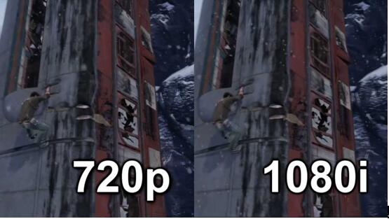

高清视频会议系统组成
-
 媒体报道
媒体报道
- 2017-08-18
媒体报道
网络视频会议是利用互联网连接不同地方的群体，将图片、文字等会议资料发送到各群体的终端设备上，从而达到面对面交流的目的。网络视频会议系统因技术问题，也分优劣。优劣体现在视频的清晰度和流畅度上。
清晰度和流畅度主要取决于分辨率，真正的高清视频会议显示图像分辨率为1080i或者720p，其他的分辨率则不是真正的高清晰度。高清格式提供的图像信息量比任何标清格式都要多。
一些小型视频显示器（小于27英寸），看上去相当清晰、流畅。但是，如果屏幕超过27英寸，480i格式的图像质量会有明显的下降。还可能看到锯齿线、轮廓模糊、褪色、视觉噪声和间断的动作。高分辨率格式所具备的更高的像素数可以提升画面质量，使大屏幕上的画面显得更清晰、流畅。在视频会议中，高清图像可以改善整体的视觉体验并消除会议疲劳。颜色也更为鲜明和真实，动作清晰流畅。
会畅通讯云视频会议系统采用了国际领先技术，实现超远程视频实时输出，画面与真实场景无延时传输。并且运用了H.264SVC动态视频编解码技术，它可根据网络状况调整最佳音视频效果，使参会者的体验度更上一层。
高清视频会议系统组成部分
1.通用终端设备
一般是指摄像头、外部音频设备、电子白板等。
2.公用终端设备
通常有会议室型、桌面型、机顶盒型三类设备。
3.视频会议采集卡
不同的视频会议需求采用对应的视频会议采集卡，它是视频会议决定视频分辨率高低的重要设备之一。比如普通的视频会议需求流媒体采集卡，高清视频会议就需求采用高清采集卡。
4.MCU：多点控制单元
MCU，相当于交换机，它在视频会议中起到核心地位，通过MCU设备给下面终端设备设置好权限属性就可以组建一个完整的视频会议网络。
MCU主要负责处理图像、数据、声音；决定图像的格式、质量、显示方式，混合音频处理声音，传输和控制数据。
5.编解码芯片(CODEC)：是视频会议的中心部，负责专业视音频的采集、紧缩、解压。
高清视频会议系统的优点
1.提高开会效率
高清视频会议有着清晰图像画质，可以减少参会者视觉听觉疲劳，保持注意力，更加关注会议内容，提高开会效率。
2.信息准确率增加
高清视频会议，可以保证图像的还原效果，对于大型会议室、大运动场景的图像传送更适应。减少因视觉效果产生的错误判断。
3.适合于色彩要求更高的应用场所
一些场所对色彩的要求较高，如实时远程实况教学、医疗诊断、应急指挥电子地图、高分辨率图片发布（工程图）等应用，高清视频会议可以精确地显示出颜色的分布，有助于领导者下达重要决策。